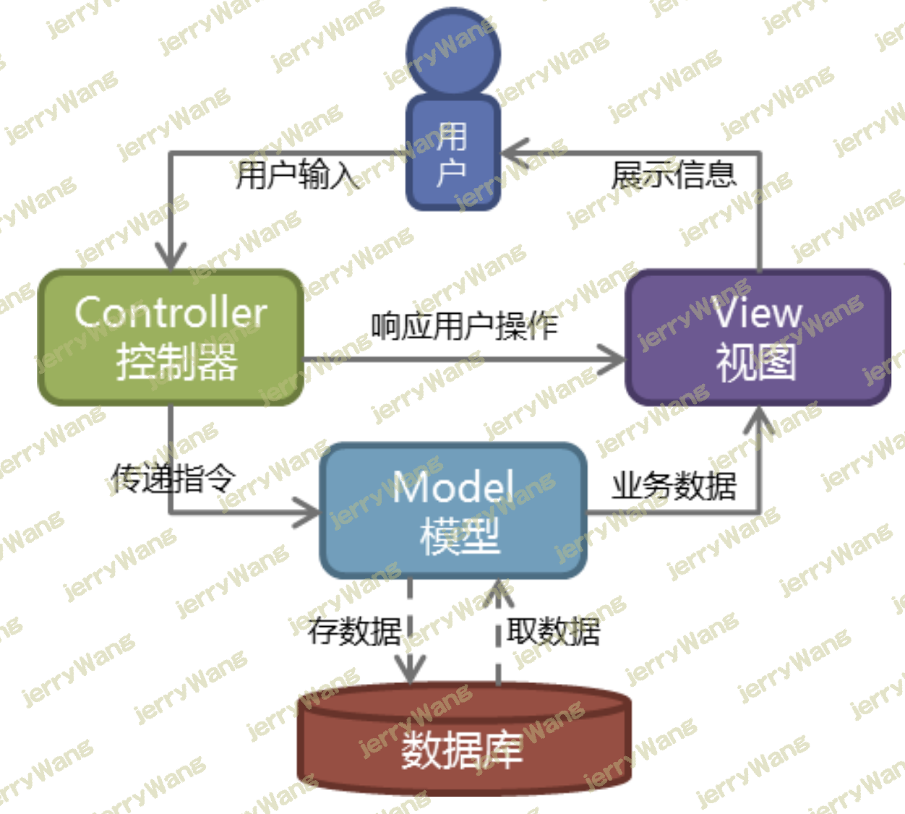

一 Web应用的组成 对于传统的应用软件来说，基本上都是部署于单机使用的，而Web应用软件则不一样，Web应用软件是基于B/S架构的，B与S部署于不同的计算机上，并且基于网络通信，所以B与S的本质都是套接字，其中B指的是浏览器(browser)，我们需要开发的是S端。
很明显我们在开发套接字服务端S时，思路应该是这样的
其中上述1和3属于套接字的底层通信，而2则属于应用程序的逻辑，所以我们通常说S端的开发由两大部分构成：server和application
二 开发一个Web应用 2.1 S端的简单开发与Http协议 按照上述思路，开发S端如下
1 2 3 4 5 6 7 8 9 10 11 12 13 14 15 16 17 18 19 20 21 22 23 24 25 26 27 28 29 30 import socketdef make_server (ip, port, app ): sock = socket.socket() sock.bind((ip, port)) sock.listen(5 ) print ('Starting development server at http://%s:%s/' %(ip,port)) while True : conn, addr = sock.accept() recv_data = conn.recv(1024 ) res = app(recv_data) conn.send(res) conn.close() def app (environ ): return b'hello world' if __name__ == '__main__' : make_server('127.0.0.1' , 8008 , app)
目前S端已经可以正常接收浏览器发来的请求消息了，但是浏览器在接收到S端回复的响应消息b’hello world’时却无法正常解析 ，因为浏览器与S端之间收发消息默认使用的应用层协议是HTTP，浏览器默认会按照HTTP协议规定的格式发消息，而S端也必须按照HTTP协议的格式回消息才行，所以接下来我们详细介绍HTTP协议
2.2 结合http协议改进S端 S端修订版本：处理HTTP协议的请求消息，并按照HTTP协议的格式回复消息
1 2 3 4 5 6 7 8 9 10 11 12 13 14 15 16 17 18 19 20 21 22 23 24 25 26 27 28 29 30 31 32 33 34 35 36 37 38 39 40 41 42 import socketdef make_server (ip, port, app ): sock = socket.socket() sock.bind((ip, port)) sock.listen(5 ) print ('Starting development server at http://%s:%s/' %(ip,port)) while True : conn, addr = sock.accept() recv_data = conn.recv(1024 ) ll=recv_data.decode('utf-8' ).split('\r\n' ) head_ll=ll[0 ].split(' ' ) environ={} environ['PATH_INFO' ]=head_ll[1 ] environ['method' ]=head_ll[0 ] res = app(environ) conn.send(b'HTTP/1.1 200 OK\r\n' ) conn.send(b'Content-Type: text/html\r\n\r\n' ) conn.send(res) conn.close() def app (environ ): return b'hello world' if __name__ == '__main__' : make_server('127.0.0.1' , 8008 , app)
此时，重启S端后，再在客户端浏览器输入：http://127.0.0.1:8008 便可以看到正常结果hello world了。
2.3 返回Html 我们不仅可以回复hello world这样的普通字符，还可以夹杂html标签，浏览器在接收到消息后会对解析出的html标签加以渲染
1 2 3 4 5 6 7 8 9 10 11 12 13 14 15 16 17 18 19 20 21 22 23 24 25 26 27 28 29 30 31 32 import socketdef make_server (ip, port, app ): sock = socket.socket() sock.bind((ip, port)) sock.listen(5 ) print ('Starting development server at http://%s:%s/' %(ip,port)) while True : conn, addr = sock.accept() recv_data = conn.recv(1024 ) ll=recv_data.decode('utf-8' ).split('\r\n' ) head_ll=ll[0 ].split(' ' ) environ={} environ['PATH_INFO' ]=head_ll[1 ] environ['method' ]=head_ll[0 ] res = app(environ) conn.send(b'HTTP/1.1 200 OK\r\n' ) conn.send(b'Content-Type: text/html\r\n\r\n' ) conn.send(res) conn.close() def app (environ ): return b'<h1>hello web</h1><img src="https://www.baidu.com/img/bd_logo1.png"></img>' if __name__ == '__main__' : make_server('127.0.0.1' , 8008 , app)
在上述函数app中，python代码与html代码耦合到一起，这是不合理的，我们应该将二者分离开，将html代码放入专门的文件中，于是我们新建timer.html文件，内容如下
1 2 3 4 5 6 7 8 9 10 <!DOCTYPE html > <html > <head > <meta charset ="UTF-8" > <title > Title</title > </head > <body > <h2 > 当前时间为：2020-02-02 20:20:20</h2 > </body > </html >
S端程序如下
1 2 3 4 5 6 7 8 9 10 11 12 13 14 15 16 17 18 19 20 21 22 23 24 25 26 27 28 29 30 31 32 33 34 import socketdef make_server (ip, port, app ): sock = socket.socket() sock.bind((ip, port)) sock.listen(5 ) print ('Starting development server at http://%s:%s/' %(ip,port)) while True : conn, addr = sock.accept() recv_data = conn.recv(1024 ) ll=recv_data.decode('utf-8' ).split('\r\n' ) head_ll=ll[0 ].split(' ' ) environ={} environ['PATH_INFO' ]=head_ll[1 ] environ['method' ]=head_ll[0 ] res = app(environ) conn.send(b'HTTP/1.1 200 OK\r\n' ) conn.send(b'Content-Type: text/html\r\n\r\n' ) conn.send(res) conn.close() def app (environ ): with open ('timer.html' , 'r' , encoding='utf-8' ) as f: data = f.read() return data.encode('utf-8' ) if __name__ == '__main__' : make_server('127.0.0.1' , 8008 , app)
上述S端为浏览器返回的都是静态页面（内容都固定的），要想返回动态页面（内容是变化的），那timer.html中的内容就不能写死，可以定义一个特殊的符号（类似于变量名），然后每次用得到的值覆盖该符号即可（类似于为变量赋值），于是timer.html内容修改如下
1 2 3 4 5 6 7 8 9 10 <!DOCTYPE html > <html > <head > <meta charset ="UTF-8" > <title > Title</title > </head > <body > <h2 > 当前时间为：{{ xxx }}</h2 > </body > </html >
S端修改如下
1 2 3 4 5 6 7 8 9 10 11 12 13 14 15 16 17 18 19 20 21 22 23 24 25 26 27 28 29 30 31 32 33 34 35 36 37 38 39 40 import socketdef make_server (ip, port, app ): sock = socket.socket() sock.bind((ip, port)) sock.listen(5 ) print ('Starting development server at http://%s:%s/' %(ip,port)) while True : conn, addr = sock.accept() recv_data = conn.recv(1024 ) ll=recv_data.decode('utf-8' ).split('\r\n' ) head_ll=ll[0 ].split(' ' ) environ={} environ['PATH_INFO' ]=head_ll[1 ] environ['method' ]=head_ll[0 ] res = app(environ) conn.send(b'HTTP/1.1 200 OK\r\n' ) conn.send(b'Content-Type: text/html\r\n\r\n' ) conn.send(res) conn.close() def app (environ ): import time now = time.strftime("%Y-%m-%d %H:%M:%S" , time.localtime()) with open ('timer.html' , 'r' , encoding='utf-8' ) as f: data = f.read() data = data.replace('{{ xxx }}' , now) return data.encode('utf-8' ) if __name__ == '__main__' : make_server('127.0.0.1' , 8008 , app)
2.4 jinja2模块 承接上例我们返回动态页面的解决方案，思考一个问题，如果页面中需要引入特殊符号/“变量”过多，那么函数app中要写一大堆字符串替换代码，相当麻烦，有一个模块jinja2很好地帮我们解决了这个问题，本质原理也就是字符串的替换，我们用它就好
timer.html内容如下
1 2 3 4 5 6 7 8 9 10 11 12 <!DOCTYPE html > <html > <head > <meta charset ="UTF-8" > <title > Title</title > </head > <body > <h2 > 当前时间为：{{ xxx }}</h2 > <h2 > 当前用户为：{{ user }}</h2 > <h2 > 当前角色：{{ role }}</h2 > </body > </html >
S端内容如下
1 2 3 4 5 6 7 8 9 10 11 12 13 14 15 16 17 18 19 20 21 22 23 24 25 26 27 28 29 30 31 32 33 34 35 36 37 38 39 40 41 42 43 import socketfrom jinja2 import Template def make_server (ip, port, app ): sock = socket.socket() sock.bind((ip, port)) sock.listen(5 ) print ('Starting development server at http://%s:%s/' %(ip,port)) while True : conn, addr = sock.accept() recv_data = conn.recv(1024 ) ll=recv_data.decode('utf-8' ).split('\r\n' ) head_ll=ll[0 ].split(' ' ) environ={} environ['PATH_INFO' ]=head_ll[1 ] environ['method' ]=head_ll[0 ] res = app(environ) conn.send(b'HTTP/1.1 200 OK\r\n' ) conn.send(b'Content-Type: text/html\r\n\r\n' ) conn.send(res) conn.close() def app (environ ): import time now = time.strftime("%Y-%m-%d %H:%M:%S" , time.localtime()) with open ('timer.html' , 'r' , encoding='utf-8' ) as f: data = f.read() template=Template(data) data=template.render({'xxx' :now,'user' :'Allen' ,'role' :'大总管' }) return data.encode('utf-8' ) if __name__ == '__main__' : make_server('127.0.0.1' , 8008 , app)
三 Web框架的由来 3.1 wsgiref模块 综上案例我们可以发现一个规律，在开发S端时，server的功能是复杂且固定的（处理socket消息的收发、解析http协议的数据），而app中的业务逻辑却各不相同（不同的软件就应该有不同的业务逻辑），重复开发复杂且固定的server是毫无意义的，有一个wsgiref模块帮我们写好了server的功能，这样我们便只需要专注于app功能的编写即可
1 2 3 4 5 6 7 8 9 10 11 12 13 14 15 16 17 18 19 20 21 22 23 24 25 26 27 28 29 30 31 32 33 34 from wsgiref.simple_server import make_server from jinja2 import Templatedef app (environ, start_response ): start_response('200 OK' , [('Content-Type' , 'text/html' )]) if environ.get('PATH_INFO' ) == '/index' : with open ('index.html' ,'r' , encoding='utf-8' ) as f: data=f.read() elif environ.get('PATH_INFO' ) == '/timer' : import time now = time.strftime("%Y-%m-%d %H:%M:%S" , time.localtime()) with open ('timer.html' , 'r' , encoding='utf-8' ) as f: data = f.read() template=Template(data) data=template.render({'xxx' :now,'user' :'Allen' ,'role' :'大总管' }) else : data='<h1>Hello, web!</h1>' return [data.encode('utf-8' )] if __name__ == '__main__' : s = make_server('' , 8011 , app) print ('监听8011' ) s.serve_forever()
timer.html已经存在了，新增的index.html页面内容如下：
1 2 3 4 5 6 7 8 9 10 <!DOCTYPE html > <html lang ="en" > <head > <meta charset ="UTF-8" > <title > Title</title > </head > <body > <h1 > 主页</h1 > </body > </html >
上述案例中app在处理业务逻辑时需要根据不同的url地址返回不同的页面内容，当url地址越来越多，需要写一堆if判断，代码不够清晰，耦合程度高，所以我们做出以下优化
1 2 3 4 5 6 7 8 9 10 11 12 13 14 15 16 17 18 19 20 21 22 23 24 25 26 27 28 29 30 31 32 33 34 35 36 37 38 39 40 41 42 43 44 45 46 47 48 49 from jinja2 import Templatedef index (environ ): with open ('index.html' , 'r' , encoding='utf-8' ) as f: data = f.read() return data.encode('utf-8' ) def timer (environ ): import time now = time.strftime("%Y-%m-%d %H:%M:%S" , time.localtime()) with open ('timer.html' , 'r' , encoding='utf-8' ) as f: data = f.read() template=Template(data) data=template.render({'xxx' :now,'user' :'Allen' ,'role' :'大总管' }) return data.encode('utf-8' ) url_patterns = [ ('/index' , index), ('/timer' , timer), ] from wsgiref.simple_server import make_server def app (environ, start_response ): start_response('200 OK' , [('Content-Type' , 'text/html' )]) reuqest_url = environ.get('PATH_INFO' ) for url in url_patterns: if url[0 ] == reuqest_url: data = url[1 ](environ) break else : data = b'404' return [data] if __name__ == '__main__' : s = make_server('' , 8011 , app) print ('监听8011' ) s.serve_forever()
3.2 简单Web框架实现 随着业务逻辑复杂度的增加，处理业务逻辑的函数以及url_patterns中的映射关系都会不断地增多，此时仍然把所有代码都放到一个文件中，程序的可读性和可扩展性都会变得非常差，所以我们应该将现有的代码拆分到不同文件中
1 2 3 4 5 6 7 8 9 mysite ├── app01 │ └── views.py ├── mysite │ └── urls.py └── templates │ ├── index.html │ └── timer.html ├── main.py
views.py 内容如下：
1 2 3 4 5 6 7 8 9 10 11 12 13 14 15 16 17 18 19 from jinja2 import Templatedef index (environ ): with open ('index.html' , 'r' , encoding='utf-8' ) as f: data = f.read() return data.encode('utf-8' ) def timer (environ ): import time now = time.strftime("%Y-%m-%d %H:%M:%S" , time.localtime()) with open ('timer.html' , 'r' , encoding='utf-8' ) as f: data = f.read() template=Template(data) data=template.render({'xxx' :now,'user' :'Allen' ,'role' :'大总管' }) return data.encode('utf-8' )
urls.py内容如下：
1 2 3 4 5 6 7 from app01.views import * url_patterns = [ ('/index' , index), ('/timer' , timer), ]
main.py 内容如下：
1 2 3 4 5 6 7 8 9 10 11 12 13 14 15 16 17 18 19 20 21 22 23 from wsgiref.simple_server import make_serverfrom mysite.urls import url_patterns def app (environ, start_response ): start_response('200 OK' , [('Content-Type' , 'text/html' )]) reuqest_url = environ.get('PATH_INFO' ) for url in url_patterns: if url[0 ] == reuqest_url: data = url[1 ](environ) break else : data = b'404' return [data] if __name__ == '__main__' : s = make_server('' , 8011 , app) print ('监听8011' ) s.serve_forever()
至此，我们就针对application的开发自定义了一个框架，所以说框架的本质就是一系列功能的集合体、不同的功能放到不同的文件中。有了该框架，可以让我们专注于业务逻辑的编写，极大的提高了开发web应用的效率（开发web应用的框架可以简称为web框架），比如我们新增一个业务逻辑，要求为：浏览器输入http://127.0.0.1:8011/home 就能访问到home.html页面
3.3 简单web框架的使用 在框架的基础上具体开发步骤如下：
步骤一：在templates文件夹下新增home.html
步骤二：在urls.py的url_patterns中新增一条映射关系
1 2 3 4 5 url_patterns = [ ('/index' , index), ('/timer' , timer), ('/home' , home), ]
步骤三：在views.py中新增一个名为home的函数
1 2 3 4 def home (environ ): with open ('templates/home.html' , 'r' ,encoding='utf-8' ) as f: data = f.read() return data.encode('utf-8' )
我们自定义的框架功能有限，总结下来大致有这么几个功能
1 2 3 功能1 、socket收发消息，指的是server 功能2 、根据不同的路径执行不同的处理逻辑/功能 功能3 、返回动态页面(字符串的替换)，如jinja2
3.4 三大web框架简介与wsgi协议 在Python中我们可以使用别人开发的、功能更强大的Web框架,如django、tornado、flask等,三种区别如下
1 2 3 4 5 6 7 8 9 10 11 实现了上述功能1 、2 、3 django框架自定义了server（基于wsgiref+socketserver模块来实现），但这只是提供给开发测试使用的server，并不能在生产环境应用，生产环境部署django的server通常采用uwsgi django自定义了视图系统，即实现了功能2 django自定义了模块系统，即实现了功能2 实现了上述功能1 、2 、3 tornado框架自定义了server，是异步非阻塞的，效率很高，生产环境也可使用，考虑到高并发，通常选择该框架 只实现了上述功能2
wsgi协议
1 2 3 4 5 6 7 8 9 综上，我们得知一个Web应用的S端由server和application构成，服务器程序server负责接受HTTP请求、解析HTTP请求、发送HTTP响应等底层套接字通信的处理，都是苦力活，如果我们自己来写这些底层代码，还没开始写应用程序逻辑application呢，就得花个把月去读HTTP规范，所以我们通常直接使用别人开发好的server程序，比如wsgiref、uwsgi、或者框架自带的等等，我们则只需要把精力放在开发应用程序逻辑application上即可。因为我们在开发application时不希望接触到诸如TCP连接、HTTP原始请求和响应格式等底层套接字通信，所以需要在server与application之间建立一套统一的规范/接口，让我们专心用Python编写Web业务。 这个接口就是WSGI：Web Server Gateway Interface。 详见（了解即可）：https://www.liaoxuefeng.com/wiki/897692888725344 /923057027806560 其实wsgiref、uwsgi等服务器程序server都是遵循wsgi协议的，有了这套协议/标准，server与application的开发就完全解开了耦合，一批程序员可以专注于开发不同的server，一批程序员(就是我们自己)则专注于开发不同的application，只要二者都遵循wsgi协议，则开发的程序可以完美整合，这跟谈恋爱是一个道理，定好你对老婆的要求/标准，只要符合这个标准的女人都可以做你的老婆，反之也一样，所以，找到单身的原因没有 web框架的出现是为了让我们把精力更多地放在开发application上，有的web框架自己实现了高性能的server(比如tornado)，有的web框架需要借助别人开发的高性能server=>uwsgi(比如django)，之所以可以这么灵活，都要归功于wsgi协议 在开发过程中我们也无需关系wsgi协议，web框架都会按照wsgi协议为我们定制好application的基本功能，所以我们只需要关心最上
四 Django框架的安装 Django-生产环境的版本选择 Django有很多版本，而且在不断的更新，那如果生产环境要开发部署使用，需要选择什么样子的版本呢？
我们需要事先了解关于django的三个版本标识
功能发布的版本号如何标识？ 目前开源软件发布一般会有2个不同的分支版本:
普通发行版本：经常用于一些新功能，新特性，但是维护周期短,不稳定.
长线支持版本[LongTerm supper]: 维护周期长,稳定
软件版本格式:大版本.小版本.修订号
大版本一般是项目内容/软件的核心架构发生改动，以前的代码已经不适用于新的版本
小版本一般是功能的删减，删一个功能，小版本+1，减一个功能，小版本+1
修订号-般就是原来的代码出现了bug，会针对bug代码进行修复，此时就会增加修订号的数值
LTS版本 LTS是长期支持(Long Term Support)的缩写，某个特性版本将被指定为长期支持(LTS)版本。这些版本将对导致安全性和数据丢失的bug进行修复，支持时间通常三年。
补丁版本的版本号如何标识？ 版本号一般是：A.B.C格式的，例如1.8.18、 1.9.2等最后一位数字代表的版本号的就是补丁版本了。这些版本的发布，是为了修正错误或安全问题。这些版本将100%兼容相关的主版本，因此我们应该保持升级到最新的补丁版本，以保证数据的完整和安全。
综上所述，最新的LTS版本，而且补丁版本也是要最新的，是最好的选择
Django的版本规划 官网地址
主要几个版本的支持时间
所以在当下，最合适的版本应该为2.2.9，虽然官网推荐使用最新版本3.0.2，但是生产环境还是不要去做小白鼠了，你懂的。
Django是python的Web框架，应该为其选择哪个版本的python解释器呢？ 官网地址
Django 版本 Python 版本 2.2 3.5、3.6、3.7、3.8（在 2.2.8 中添加）、3.9（在 2.2.17 中添加） 3.0 3.6、3.7、3.8、3.9（在 3.0.11 中添加） 3.1 3.6、3.7、3.8、3.9（在 3.1.3 中新增） 3.2 3.6、3.7、3.8、3.9、3.10（在 3.2.9 中新增）
django的版本我们推荐3.2.10LTS，所以搭配的python解释器版本，我们应该选择python3.5之后的解释器
安装 1 pip install django==3.2 .10
查看
五 django框架的使用 命令行创建并启动Django项目 如果使用的是我们自定义的框架来开发web应用，需要事先生成框架包含的一系列基础文件，然后在此基础上进行开发。
如果使用的是Django框架来开发web应用，同样需要事先生成Django框架包含的一系列基础文件，然后在此基础上进行开发。
但Django框架更为方便的地方在于它已经为我们提供了一系列命令来帮我们快速地生成这一系列基础文件
1 2 # 在命令行执行以下指令，会在当前目录生成一个名为mysite的文件夹，该文件夹中包含Django框架的一系列基础文件 django-admin startproject mysite
创建功能模块
1 2 cd mysite # 切换到mysite目录下,执行以下命令 python manage.py startapp app01 # 创建功能模块app01，此处的startapp代表创建application下的一个功能模块。例如我们要开发application是京东商城，京东商城这个大项目下有一个订单管理模块，我们可以将其命名为app01
运行
1 python manage.py runserver 8001 # 在浏览器输入：http://127.0.0.1：8001 会看到Django的欢迎页面。
基于Pycharm创建Django项目以及虚拟环境 文件—-》新建项目—》Django
在命令创建好的django，用pycharm加载目录
文件—-打开创建好的django目录—-然后设置中—设置python解释器
pytcharm 报错ImportError: DLL load failed while importing _sqlite3: 找不到指定的模块。是因为anaconda虚拟环境,CSDN
去官网 根据系统对应的版本下载相应DDL文件。
复制黏贴到，Pycharm加载anaconda配置的虚拟环境目录下的DLLs下
Django项目目录结构 截目录树的图(按照下述目录截图)
1 2 3 4 5 6 7 8 9 10 11 12 13 14 15 mysite ├── app01 │ └── migrations │ └── admin.py │ └── apps.py │ └── models.py │ └── tests.py │ └── views.py ├── mysite │ └── asgi.py │ └── settings.py │ └── urls.py │ └── wsgi.py └── templates ├── manage.py
关键文件介绍
1 2 3 4 5 6 7 8 9 10 -manage.py---项目入口，终端脚本命令，提供一系列用于生成文件或者目录的命令，也叫脚手架 -项目名 主应用开发目录，保存了项目中所有开发人员编写的代码，目录是生成项目指定的 -asgi.py django3.0以后新增的，用于让django运行在异步编程模式的一个web应用对象 -settings.py 全局配置信息 -urls.py 总路由,请求地址跟视图函数的映射关系 -wsgi.py wsgi项目运行在wsgi服务器时的入口文件，本质上来说 manage.py runserver 内部调用的就是wsgi -app名字 -migrations 数据库迁移的记录 -models.py 数据库表模型 -views.py 处理业务逻辑的函数，简称视图函数
配置文件settings.py
BASE_DIR 项目目录 DEBUG 上线之后改为False. ALLOWED_HOSTS 允许访问的主机. 上线之后可以写*. 星号表示所有 INSTALLED_APPS 注册的app. (app就是功能模块) MIDDLEWARE Django中简件 TEMPLATES HTML文件存放路径配置 DATABASES 项目指定的数据库 LANGUAGE_CODE 文字编码 TIME_ZONE 时间
命令行与pycharm创建django项目的区别 用命令行创建django项目: 用命令行创建django项目不会自动创建templates文件夹. 并且也不会自动配置templates文件夹路径, 需要你手动到setting.py配置文件中找到TEMPLATES在DIRS对应的[]中加上BASE_DIR / 'templates'或者os.path.join(BASE_DIR, 'templates')用pycharm创建django项目: 会自动创建并且自动配置路径, 还可以自动帮你创建一个应用并且自动注册, 不过只能在创建项目的时候创一个, 后续的应用(app01)创建需要手动到settings.py配置文件中找到INSTALLED_APPS中添加app01.apps.App01Config 或者 app01
1 2 3 4 5 6 7 8 9 10 11 12 13 14 15 16 17 BASE_DIR = os.path.dirname(os.path.dirname(os.path.abspath(__file__))) TEMPLATES = [ { 'BACKEND' : 'django.template.backends.django.DjangoTemplates' , 'DIRS' : [BASE_DIR / 'templates' ], ... ] TEMPLATES = [ { 'BACKEND' : 'django.template.backends.django.DjangoTemplates' , 'DIRS' : [], ... ]
基于Django实现的一个简单示例 （1）url.py 1 2 3 4 5 6 7 8 9 10 11 from django.contrib import adminfrom django.urls import path,re_path from app01 import viewsurlpatterns = [ path('admin/' , admin.site.urls), re_path(r'^index/$' ,views.index), ]
（2）视图 1 2 3 4 5 6 7 8 9 from django.shortcuts import renderdef index (request ): import datetime now=datetime.datetime.now() ctime=now.strftime("%Y-%m-%d %X" ) return render(request,"index.html" ,{"ctime" :ctime})
（3）模版 在templates目录下新建文件index.html
1 2 3 4 5 6 7 8 9 10 11 <!DOCTYPE html > <html lang ="en" > <head > <meta charset ="UTF-8" > <title > Title</title > </head > <body > <h4 > 当前时间:{{ ctime }}</h4 > </body > </html >
测试：
1 python manage.py runserver 8001 # 在浏览器输入：http://127.0.0.1:8001/index/ 会看到当前时间。
六 MVC和MTV模型 Web服务器开发领域里著名的MVC模式，所谓MVC就是把Web应用分为模型(M)，控制器(C)和视图(V)三层，他们之间以一种插件式的、松耦合的方式连接在一起，模型负责业务对象与数据库的映射(ORM)，视图负责与用户的交互(页面)，控制器接受用户的输入调用模型和视图完成用户的请求，其示意图如下所示：

MVC的软件架构模式具有有耦合性低、重用性高、生命周期成本低等优点，主要用于web框架，常用的开发语言，有java，php，node.js等等。 Django框架的设计模式借鉴了MVC框架的思想，也是分成三部分，不同之处在于它拆分的三部分为：Model（模型）、Template（模板）和View（视图），也就是MTV模式，
1 2 3 4 5 6 7 8 此外，Django还有一个urls分发器，它的作用是将一个个URL的页面请求分发给不同的view处理， view再调用相应的Model和Template
MTV模式与MVC本质上都是一样的，都是为了各组件保持松耦合关系，如下所示
一般是用户通过浏览器向我们的服务器发起一个请求(request)，这个请求回去访问视图函数，（如果不涉及到数据调用，那么这个时候视图函数返回一个模板也就是一个网页给用户），视图函数调用模型，模型去数据库查找数据，然后逐级返回，视图函数把返回的数据填充到模板中空格中，最后返回网页给用户。
七 Django框架的分层与请求生命周期 综上，我们使用Django框架就是为了开发application，而application的工作过程本质就是根据不同的请求返回不同的数据，Django框架将这个工作过程细分为如下四层去实现
1、路由层（根据不同的地址执行不同的视图函数，详见urls.py）
2、视图层（定义处理业务逻辑的视图函数，详见views.py）
3、模型层 （跟数据库打交道的，详解models.py）
4、模板层（待返回给浏览器的html文件，详见templates）
这体现了一种解耦合的思想，下面我们开始详细介绍每一层

 微信
微信 支付宝
支付宝